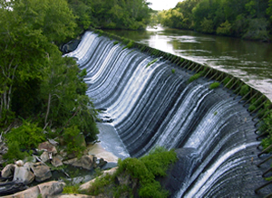

Hydrology Section
The mission of the Hydrology Section is to provide guidance, counsel, and data to the State government and the general public for the beneficial use, conservation, and management of South Carolina's water resources. To that end, the Section maintains a program of hydrologic projects and technical activities aimed at collecting hydrologic, geologic, and water-quality data; monitoring the availability of surface water and ground water; and studying and modeling these resources. The Hydrology Section is concerned with maintaining a balance among water-supply development, economic growth, and preservation of fish and wildlife habitats.

Surface Water
- Surface Water Modeling
- Streamflow Monitoring
- FERC Relicensing
- Savannah River Basin Comprehensive Study
- Statewide Springs Database
- Current and Historical Streamflow
Reports, presentations and meeting notes from statewide modeling of surface water availiblity.
The SCDNR hosted two streamflow monitoring workshops to highlight streamflow monitoring needs in the State and to solicit additional monitoring recommendations.
DNR hydrologists and biologists work closely with the numerous stakeholders to ensure that the State’s natural resources associated with each licensed hydropower project are protected.
During this phase, the current Drought Contingency Plan will be evaluated to determine if additional storage can be preserved in the lakes during droughts without having adverse effects on users and the ecosystem downstream.
This inventory contains information on the name and location of each spring and additional information such as general water chemistry, owner, and historical information where available.
Looking for streamflow data? Please visit the USGS National Water Information System web page for South Carolina (linked above).
Groundwater
- Groundwater Monitoring Network
- Digital Geophysical Logs
- Hydrogeologic Modeling
- Potentiometric Mapping
- Salt Water Intrusion
- Coastal Plain Water Well Database
Groundwater levels are measured and reported routinely across the State. View hydrographs and download data from our monitoring network.
Find and download digital geophysical logs that were made of water wells in South Carolina.
SCDNR hydrologists are modeling the state's groundwater resources in multiple capacities, including delineating aquifers, modeling groundwater recharge, and modeling groundwater flow conditions.
View and download potentiometric maps, developed routinely for the major aquifers from water level data across the coastal plain.
Salt water intrusion is being monitored along the South Carolina coast.
The Hydrology Section has hard-copy records of more than 13,000 water wells located in the Coastal Plain counties of South Carolina.
Looking for more?
More hydrology information can be found through the websites of other agencies and organizations.